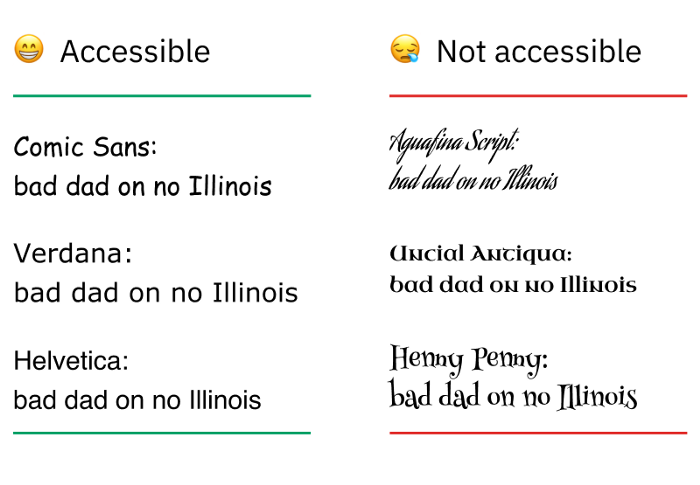

Web accessibility means that websites, tools, and technologies are designed and developed so that people with disabilities can use them.
| Visual | Mobility | Hearing |
|---|---|---|
| Screen readers | Voice recognition | Captions |
| Screen Magnifiers | Head pointers | Visual signs |
| Audio descriptions | Motion tracking | Automatic transcription |
| Color contrast | Eye tracking | |
| Audio Signals | Single switch entry devices |
Text links in a different font color
This sounds okay, until you think about the fact that anyone with colour blindness will struggle with calls to action that are visually conveyed through colour alone.
Missing or poor alternative text on images
Bad alt text:
alt="Image of a park"
Inaccessible font-family/font-size
Someone with a cognitive impairment like dyslexia might quickly give up on trying to read it.
